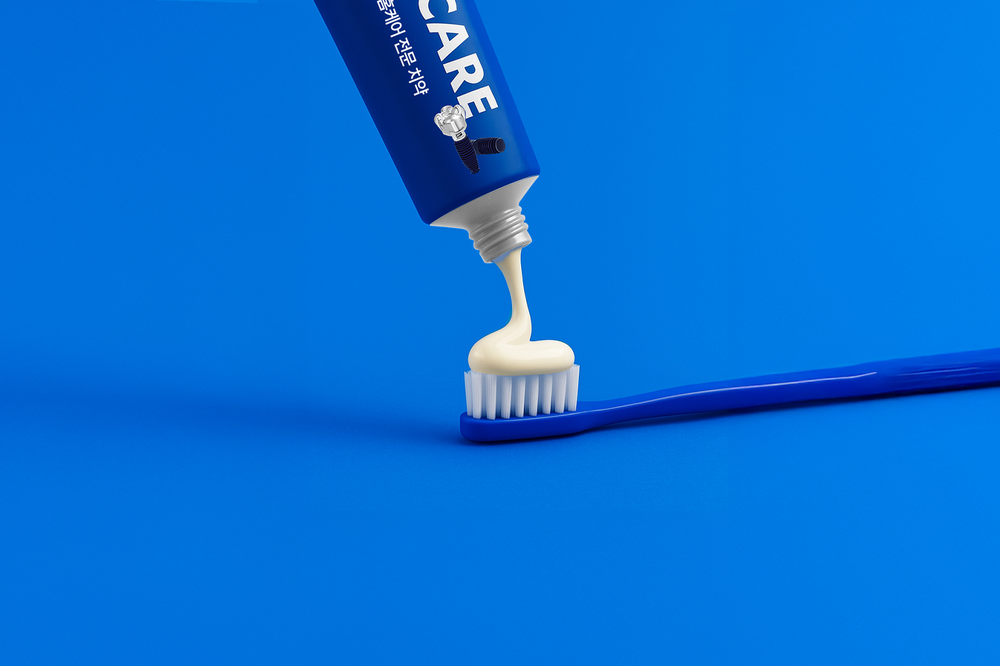
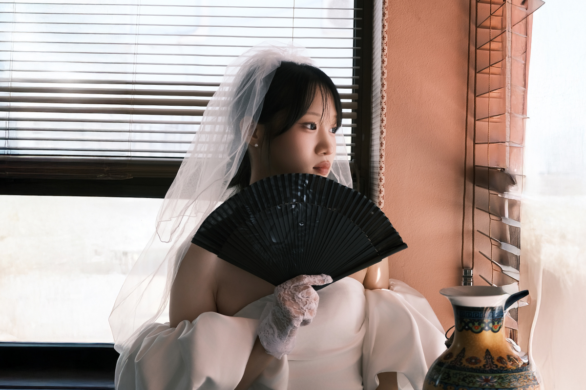
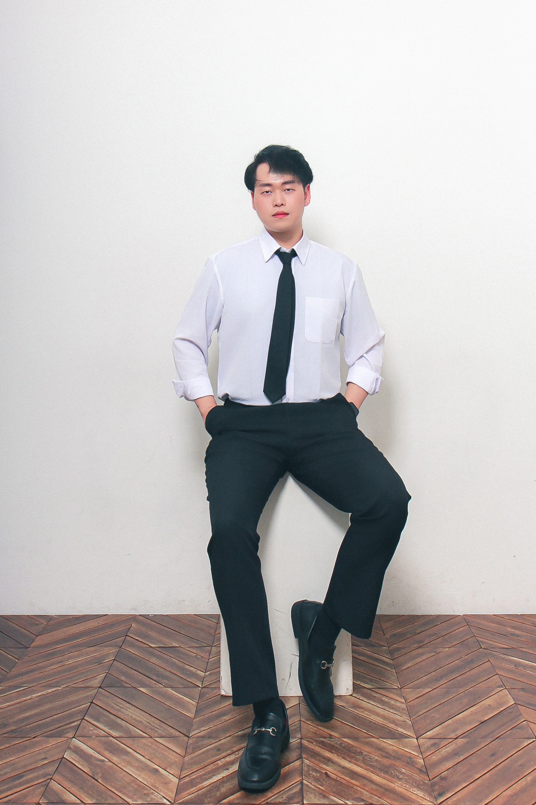

DESIGN · CODE · PHOTO · FILM
SELECTED PROJECTS · 2022—2026
생각에서 시작해
경험으로
남았습니다

01 / DIGITALBRAND EXPERIENCE · 2026
웹 디자인

02 / CAMPAIGNART DIRECTION · 2025
인물 / 제품 / 프로필
 03 / MOVING IMAGE
03 / MOVING IMAGEFILM · 2025
After Hours
프로젝트 제목 · 이미지 · 설명 · 기여도를 실제 작업 내용으로 바꿔주세요.
PROFILE / 01

디자인과 코드를 잇는
크리에이터.
웹디자이너이자 웹 퍼블리셔입니다. 브랜드의 방향을 시각적으로 설계하고, 반응형 웹으로 직접 구현합니다. 촬영과 영상 편집은 물론 AI 이미지 생성과 AI 보조 코딩까지 활용해 아이디어를 빠르게 실험하고 완성합니다.
- NAME
- YANG DONG EUN
- ROLE
- Web Designer · Publisher
- BASE
- Korea
- CONTACT
- yangde1230@naver.com ↗
01웹 디자인UI / UX · VISUAL SYSTEM
02웹 퍼블리싱HTML · CSS · JAVASCRIPT
03AI 크리에이티브AI IMAGE · AI-ASSISTED CODING
04촬영과 영상 편집PHOTO · VIDEO · POST-PRODUCTION